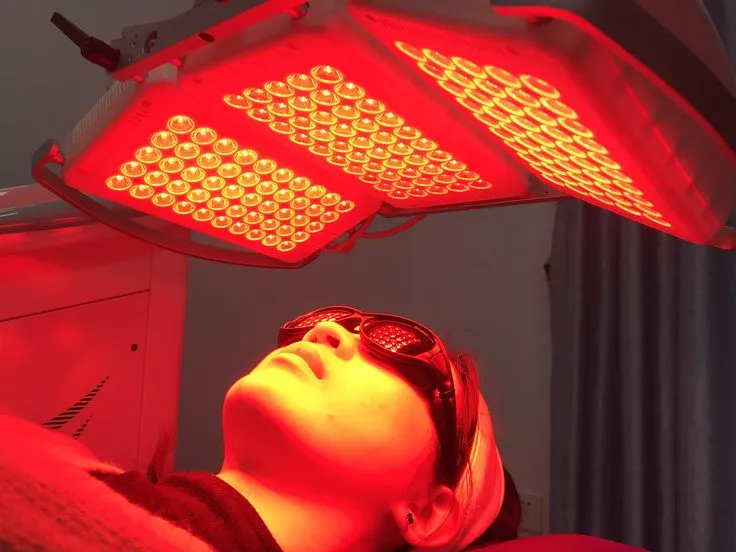

Red Light Therapy for Eczema at Home (2025 Guide): Proven Tips & Results
Last updated: July 3, 2025
Tired of dealing with stubborn eczema flare-ups and looking for a natural solution that actually works—right from the comfort of your home? Red light therapy for eczema at home has become a popular option for those seeking non-invasive, drug-free relief. But does it really work? In this comprehensive guide, we’ll dive deep into the science behind red light therapy, how it affects eczema-prone skin, and step-by-step instructions to safely use it at home. Whether you're new to light therapy or just want to make sure you're doing it right, this article is your complete starting point.
Understanding Red Light Therapy: The Basics
Red light therapy, also known as photobiomodulation or low-level laser therapy (LLLT), is a non-invasive treatment that uses specific wavelengths of red and near-infrared light to stimulate healing and regeneration in cells. Originally developed by NASA for wound healing in space, this therapy is now widely used in dermatology clinics, wellness centers, and increasingly, at home.
How Red Light Therapy Works
The science behind red light therapy lies in its ability to penetrate the skin and activate mitochondrial function within the cells. Mitochondria, often called the powerhouses of cells, absorb the light and produce more ATP (adenosine triphosphate), which boosts energy, reduces oxidative stress, and triggers anti-inflammatory effects. This mechanism is why red light therapy is so effective for skin repair, inflammation, and even pain relief.
Why Red Light Therapy at Home Is Gaining Popularity
While professional red light therapy devices can cost thousands, at-home solutions have become increasingly accessible and affordable. Whether you're using a handheld wand, a panel, or an at home sauna with red light therapy, the convenience of daily sessions without needing appointments or travel has made this wellness tool a staple in many households.
Red Light Therapy for Eczema at Home
One of the most promising uses of red light therapy is in the treatment of eczema, a chronic inflammatory skin condition affecting millions. With no definitive cure, many individuals turn to at-home remedies to manage symptoms. Red light therapy for eczema at home offers a gentle, drug-free approach to reducing itching, redness, and flare-ups.
Red and near-infrared wavelengths can calm the immune response and enhance skin barrier repair. Studies have shown significant improvements in eczema patients using consistent light exposure over several weeks. For best results, ensure the device emits wavelengths between 630nm and 850nm and is FDA-cleared for skin treatment.
How to Use Red Light Therapy at Home
Getting started is easier than you think. Here’s a step-by-step guide on how to use red light therapy at home effectively:
- Choose the right device: Panels are ideal for full-body use, while masks and wands are better for targeted areas.
- Cleanse the skin: Remove lotions or makeup to ensure light penetrates the skin effectively.
- Distance & time: Stay 6–12 inches from the panel, and start with 10–20 minute sessions, 3–5 times per week.
- Protect eyes: Use goggles or close your eyes when using face-directed lights.
- Track your progress: Take weekly photos or logs to measure improvements.
Consistency is key. Results may start to appear after 2–4 weeks, depending on the condition being treated.
Combining Red Light Therapy with At Home Saunas
Many wellness enthusiasts are combining traditional heat therapy with red light for a double-benefit approach. An at home sauna with red light therapy provides both detoxification and cellular regeneration, making it a powerful combo for those battling fatigue, skin issues, or chronic pain.
Infrared saunas already stimulate sweat glands and blood flow. Adding red light therapy enhances collagen production, reduces inflammation, and supports nervous system regulation. When used together, users report deeper relaxation, improved skin tone, and reduced joint stiffness.
Is Red Light Therapy Safe for Pets?
Surprisingly, the benefits of this technology extend to animals as well. Red light therapy for dogs at home is increasingly used to manage arthritis, hip dysplasia, wounds, and post-surgery recovery in pets.
Veterinary-approved devices emit safe levels of light that reduce inflammation and improve mobility in aging or injured dogs. Sessions typically last 5–15 minutes depending on the dog’s size and condition. Always consult your vet before starting, but many pet owners report visible improvement within a few weeks.
What Conditions Can You Treat with Red Light at Home?
Red light therapy has broad applications. Besides eczema and skin rejuvenation, common uses include:
- Acne: Kills acne-causing bacteria and reduces inflammation without harsh chemicals.
- Wrinkles and fine lines: Stimulates collagen and elastin for smoother skin.
- Hair loss: Promotes follicle health and growth in early-stage hair thinning.
- Joint pain and arthritis: Relieves pain and stiffness in knees, hands, and lower back.
- Sleep and mood: Improves melatonin production and reduces cortisol.
As with any therapy, consistency and correct usage are essential. In most cases, red light therapy is safe and has no side effects when used as directed.
Who Should Avoid Red Light Therapy?
Though generally safe, certain individuals should consult a doctor before starting red light therapy at home:
- People with epilepsy or light-triggered seizures.
- Those taking photosensitive medications.
- Anyone with active cancer or undergoing chemotherapy.
- Pregnant women (as a precaution).
If you're unsure, always start with short sessions and observe your body's response.
Real User Experiences: Before and After
Many users have documented their transformation with red light therapy for eczema at home. Reddit forums and Facebook groups are filled with before-and-after photos showing reduced redness, smoother skin, and fewer outbreaks. For dog owners, reports of reduced limping and higher activity levels after consistent therapy sessions are also common.
These real-life testimonials reflect the growing trust and excitement around this once-clinical-only treatment. The key takeaway? You don’t need a clinic—you can heal, soothe, and rejuvenate right from your living room.
Final Thoughts
Whether you're targeting skin conditions like eczema, improving muscle recovery, or simply optimizing wellness, red light therapy at home is a practical and proven tool. With new technologies making it more accessible than ever, now is the perfect time to explore its full potential.
Conclusion: Is Red Light Therapy at Home Worth It?
Red light therapy has evolved from a niche wellness trend to a widely accepted tool for healing, rejuvenation, and recovery. With decades of scientific research and a growing number of real-world success stories, it's no longer just hype—it's a game changer. Whether you're struggling with chronic skin conditions like eczema, looking to reduce joint pain, or simply aiming to improve your overall health, red light therapy at home offers a convenient, drug-free solution.
From the comfort of your own space, you can now experience benefits once reserved for high-end clinics and medical spas. Devices have become safer, more affordable, and easier to use, making this therapy accessible to nearly everyone—including your pets. And with options like at home saunas with red light therapy, the possibilities are expanding even further.
Still wondering if it's right for you? If you value natural wellness, want to manage symptoms without medications, or are curious about non-invasive therapies that actually work, red light therapy is worth exploring. Start small, stay consistent, and track your results—you may be surprised at just how effective it can be.
Your healing can begin today. And you don’t have to leave your home to do it.
Common Mistakes to Avoid
- Using the wrong wavelength: Many people purchase red light devices that don’t deliver the optimal therapeutic wavelengths (typically 630–660nm for red light, and 810–850nm for near-infrared). Choosing the wrong spectrum may lead to poor results or no effect at all.
- Inconsistent use: Like most therapies, consistency is key. Skipping sessions or using red light therapy sporadically can slow down results. For effective results, especially with red light therapy for eczema at home, follow a steady schedule.
- Incorrect distance or exposure time: Standing too far from the device or not using it for the recommended duration can reduce effectiveness. Always follow the device's user manual for optimal distance (usually 6–12 inches) and session length (typically 10–20 minutes).
- Expecting overnight results: While some users notice improvements quickly, most benefits—like improved skin texture or reduced joint pain—appear gradually over weeks. Patience and routine are essential, especially for at-home red light therapy users.
- Not cleaning the device: Dust, oils, and fingerprints on the light panel can reduce output strength. Make sure your device remains clean to maintain maximum effectiveness.
- Overuse without rest days: Using red light therapy multiple times per day, every single day, can overwhelm your body. Give your cells time to recover by including rest days in your weekly routine.
- Ignoring skin type and condition: Red light therapy is generally safe, but people with photosensitivity, certain skin conditions, or those on medications that cause light sensitivity should consult a healthcare provider before starting.
- Using it on pets without guidance: While red light therapy for dogs at home can be helpful, improper exposure can be harmful. Always consult a vet or use pet-specific devices and follow guidelines carefully.
Recommended Products for Red Light Therapy at Home
Looking to enhance your red light therapy at home routine? These top-rated Amazon products are ideal for beginners and experienced users alike—whether you're treating eczema, improving skin health, or supporting your pet's recovery.
1. Hooga HG300 Red Light Therapy Device
This powerful, full-spectrum red and near-infrared light panel is perfect for home use. With clinical-grade LEDs and a sturdy design, it’s ideal for those looking to treat skin issues or muscle recovery with consistent results.
2. Mito Red Light MitoMIN 2.0
Designed with both red and near-infrared light wavelengths, this device is a favorite for users looking to target inflammation, joint pain, or use red light therapy for eczema at home.
3. Bestqool Red Light Therapy for Joint Pain & Skin
A handheld device that’s ideal for spot treatment. It’s especially useful for joint pain and small areas of irritated skin. Many users find this effective for targeted applications like red light therapy for dogs at home.
4. HigherDOSE Red Light Face Mask
This sleek, wearable face mask makes it easy to incorporate red light therapy at home into your skincare routine. Safe, portable, and ideal for those looking to boost collagen and improve complexion.
5. Red Light Therapy Mat for Home Use
If you're combining red light and heat, this therapy pad is a game changer. Wrap it around your back, knees, or shoulders to soothe soreness. A great tool for daily recovery and wellness.
6. Handheld Red Light Therapy Device for Pet
Designed specifically for pets, this vet-approved red light therapy device is a safe way to care for injuries, arthritis, or skin issues in dogs and cats. A must-have for anyone serious about red light therapy for dogs at home.
These products are a great starting point if you’re building your own at home sauna with red light therapy or simply looking for easy-to-use devices that offer proven results. Always follow manufacturer guidelines for optimal use and safety.
Frequently Asked Questions
To use red light therapy at home effectively, position the device 6–12 inches from your skin and expose the area for 10–20 minutes per session. Use it 3–5 times a week for best results, and always follow the manufacturer’s safety guidelines.
Yes, many people report improvement when using red light therapy for eczema at home. Red light helps reduce inflammation and supports skin repair. However, results vary, and it’s best to consult a dermatologist for personalized advice.
Absolutely. Red light therapy for dogs at home is becoming increasingly popular for treating arthritis, injuries, and inflammation. Use pet-safe devices and avoid shining light directly into your dog’s eyes.
Red light (620–750nm) penetrates the skin surface and is ideal for skin health, while near-infrared (750–1100nm) penetrates deeper tissues, helping with muscle recovery and joint pain. Many home devices combine both for full benefits.
Yes! Many wellness enthusiasts create an at home sauna with red light therapy by adding red light panels to infrared saunas. This combination maximizes detoxification, boosts circulation, and enhances recovery.
Some users see improvements in skin tone or pain relief after just a few sessions. However, noticeable and lasting results from red light therapy at home often take 4–8 weeks of consistent use.
Yes, red light therapy is generally safe for daily use if you follow the recommended duration and distance. Avoid overexposure, and always read your device’s manual for best practices.